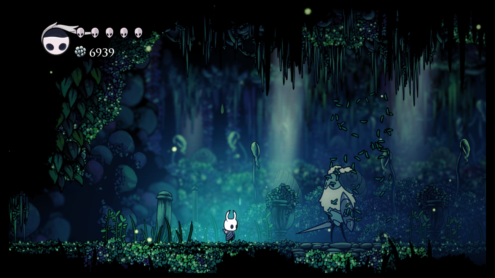
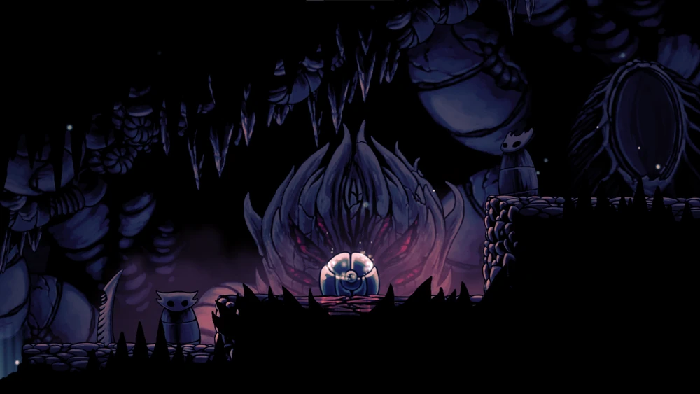

Premise

Hollow Knight is a 2017 Metroidvania video game developed and published by independent developer Team Cherry. In the game, the player controls the Knight, a nameless insectoid warrior, who explores Hallownest, a fallen kingdom plagued by a supernatural disease, known as the infection. The game is set in diverse subterranean locations, and it features friendly and hostile insectoid characters and numerous bosses. Players have the opportunity to unlock new abilities as they explore each location, along with pieces of lore and flavour text that are spread throughout the kingdom.
The concept behind Hollow Knight was originally conceived in 2013 in the Ludum Dare game jam. Team Cherry wanted to create a game inspired by older platformers that replicated the explorational aspects of its influences. Inspirations for the game include Faxanadu, Metroid, Zelda II: The Adventure of Link, and Mega Man X. Development was partially funded through a Kickstarter crowdfunding campaign that raised over A$57,000 by the end of 2014. It was released for Windows, Linux, and macOS, in early 2017 and for the Nintendo Switch, PlayStation 4, and Xbox One in 2018. After release, Team Cherry supported the game with four free expansions.
Outstanding collectibles
Grubs are creatures found trapped in glass jars throughout Hallownest. They can be freed from their jar after which Grubfather grants a reward for each Grub that is saved.
When close enough to their location, a faint crying noise can be heard in their general direction. The Grubs talk in high-pitched babbles and cannot be listened to.
Map Pin Grub.png
They can be freed by breaking the jar with the Nail, after which the Grub burrows into the ground and returns to Grubfather. Obtaining the Collector's Map after beating the Collector shows the locations of unfreed Grubs on purchased Maps.
There are 46 Grubs to be found in total. Rescuing 23 or more Grubs rewards the Grubfriend achievement, while rescuing all 46 Grubs rewards the Metamorphosis achievement.
Charms

Charms in Hollow Knight are special Equipment that provide The Knight with buffs that will help with both traversing Hallownest and battling its foes. All charms have a Notch Cost, and The Knight will have a Notch Limit which gradually increases throughout the game. Charms can only be equipped and unequipped while having The Knight sit on a bench.
There are a total of 45 different Charms available in Hollow Knight, including the Charms from the following DLC: Hidden Dreams, The Grimm Troupe, Lifeblood and Godmaster. 5 of the Charms in Hollow Knight later turn into a different Charm, thus there are only 40 slots for Charms in The Knight's inventory.
The 45 Charms of Hollow Knight are not all equal in effectiveness or worth for the amount of Notch Cost it has. There are many Charms in the game that are mostly useless unless synergised with other Charms, and some Charms are a must have for most of the playthrough.
GALLERY